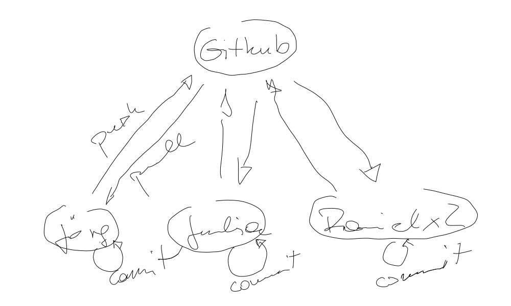
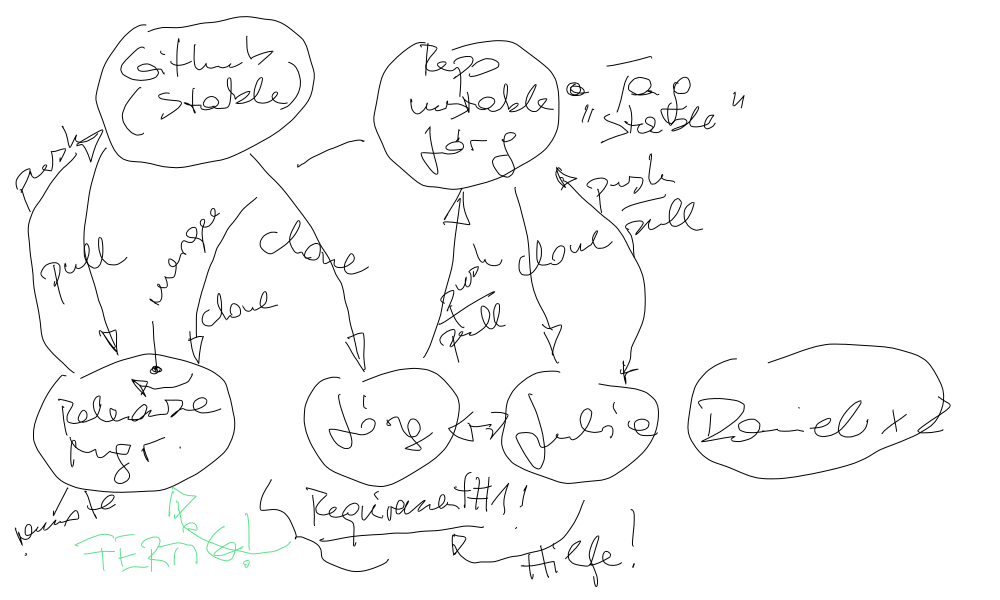

The C++ Programming Language (2021-07-12 - 2021-07-16)¶
Day 1¶
Setup for the new kids¶
Recapitulate some C¶
-
Daniel:
Question: so I could store the address of an integer in an integer?
Answer: the C compiler would let you (if he’s nice he can issue a warning), but this is not what you want. Because you’d lose half of the 64-bit pointer value when you store it in a (32-bit) integer.
Group project review¶
External (non-builtin) functionality: CSV export
Bleeding edge base functionality: Search by lastname
Jump into C++¶
Exercise¶
On Github, there is a directory OO-Point. Starting
from the point implementation, write comparable classes
circle, containing a methodcircle::area()rect, also containing a methodcircle::area()sphere(in 2D :-) ), also containing a methodcircle::area()
Make the associated test programs run:
run.
Day 2¶
Regular Topics¶
Preprocessor, to clear up Julia’s include guard question. Sigh.
Only as a reference in case somebody needs token pasting and such: C Preprocessor: More
Constructor, Destructor, Copy
More Constructors, Destructors
The rest of it. Yesterday we only got to the plain
pointstuff where no resource management is necessary.
Functions and Methods
Exercises¶
point::operator==()
rect::operator+=()
static double point::distance(const point&, const point&)
Day 3¶
Exercises¶
Finish exercises from day 2
Regular Topics¶
Templates
Standard Template Library: Container Templates
Toolchain: C/C++ Build (How Complicated Can Things Be?)¶
{kind=link}
{kind=link}
Exercises: Using the C++ Toolbox¶
Starting to morph the “user database” from the C course (a month ago) into something more object oriented.
Day 4¶
Finish First “User Database” Functionality¶
UserDB::has_lastname(), usingstd::find_if()
Unit Testing¶
Current state is, we’re writing one program to test one aspect/requirement. This is something that can be formalized (/me big fan of things that are so simple).
Install Google’s unittesting framework (on Doze, sadly), and start to use it.
GTest Installation¶
Clone GitHub repository:
$ git clone https://github.com/google/googletest.git
Build
Build with VS Code: open directory, and hit CMake build botton
Build by hand
$ cd googletest
$ cmake .
Install
Copy
lib/*.ato MinGW installation..../libdirectoryCopy
include/gtest/to MinGW installation..../includedirectory
Git Workflows¶
Central workflow. Much like SVN’s, except that local commits are possible.  |
Distributed workflow. (At least, one possibility). Resembles Github “pull requests”.  |
{kind=link}
{kind=link}
Exercises¶
Torture them with even more requirements that they need to implement
Regular Topics¶
Exceptions
Live-hacked, rudimentarily, into our project. See here for the exception handling part.
Day 5¶
References recap (References)
explicit: another C++ trap/bug (automatic conversion), fixed by an ad-hoc solution - theexplicitkeyword, bolted onto what’s there. Here’s a live-hacked explanation of it.It has gotten a bit larger becauser I used it as an introduction to recource management and smart pointers.
Pointer classes (“smart pointers”)
-
Although
std::unique_ptr<>is the simpler of the two in what it does, its usage is more involved. Ownership transfer (this is what I like about it) is implemented using the outright genius “move” mechanism (since C++11), and one needs to know a bit when the compiler fails to enforce the ownership transfer contract.Live-hacked that here.
-
Didn’t go through it in great detail (time was over anyway). Shared ownership, though, is easier explained than unique ownership: “just don’t think about it”. (Should have mentioned reference cycles, to make things more complicated :-) ).
-
Day X¶
Smart Pointers, Recap¶
{kind=link}
{kind=link}
std::map¶
Associative Containers. Livehackingly building an index into our user database
{kind=link}
{kind=link}
{kind=link}
{kind=link}
{kind=link}
{kind=link}